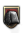
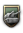
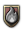
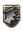

指挥官列表（原版）
原页面：List of commanders (base game)
For a list of commanders available with all DLC enabled, see 指挥官列表.
This is a list of all predefined 指挥官 in the base game (no DLC enabled).
| 国家 | 名称 | 特质 | |||||
|---|---|---|---|---|---|---|---|
| Xhemal Aranitasi | 2 | 1 | 3 | 2 | 1 | ||
| Arturo Rawson | 3 | 4 | 3 | 1 | 2 | ||
| 穆罕默德·亚约 | 2 | 2 | 2 | 2 | 2 | ||
| Ruprecht von Wittelsbach | 4 | 4 | 4 | 3 | 2 | ||
| 波希米亚-摩拉维亚 | Erich Friderici | 1 | 1 | 1 | 1 | 1 | |
| Georgi Nikolov Popov | 4 | 2 | 4 | 3 | 4 | ||
| Charles Foulkes | 4 | 4 | 2 | 4 | 3 | ||
| Hsueh Yueh | 3 | 5 | 3 | 2 | 3 | ||
| 张学良 | 3 | 3 | 3 | 2 | 2 | ||
| 毛泽东 | 4 | 2 | 4 | 3 | 4 | ||
| Ante Pavelić | 2 | 3 | 1 | 2 | 2 | ||
| Slavko Kvaternik | 3 | 4 | 2 | 2 | 3 | ||
| Josef Šnejdárek | 4 | 4 | 4 | 3 | 2 | ||
| Vojtěch Luža | 3 | 5 | 2 | 3 | 1 | ||
| 弗拉基米尔·西多林 | 2 | 3 | 2 | 1 | 1 | ||
| 海因·特尔·波尔滕 | 3 | 2 | 3 | 2 | 3 | Loyalty to the Netherlands | |
| 卡尔·G·曼纳海姆 | 5 | 3 | 6 | 5 | 4 | ||
| Alphonse Georges | 3 | 2 | 2 | 4 | 2 | ||
| Antoine-Marie-Benoît Besson | 2 | 1 | 2 | 2 | 2 | ||
| Maurice Gamelin | 2 | 1 | 4 | 2 | 2 | ||
| 马克西姆·魏刚 | 3 | 3 | 4 | 2 | 3 | ||
| 格奥尔基·克维尼塔泽 | 3 | 2 | 4 | 2 | 2 | ||
| 奥古斯特·冯·马肯森 | 4 | 3 | 4 | 3 | 3 | ||
| 海因里希·希姆莱 | 2 | 1 | 3 | 1 | 2 | 民兵军官 | |
| 维尔纳·冯·布隆贝格 | 3 | 2 | 3 | 3 | 2 | ||
| 李宗仁 | 3 | 3 | 4 | 2 | 3 | ||
| Ferenc Feketehalmy-Czeydner | 2 | 2 | 1 | 2 | 2 | ||
| 贝尼托·墨索里尼 | 1 | 2 | 1 | 1 | 1 | ||
| Emilio De Bono | 1 | 1 | 1 | 1 | 1 | ||
| 伊塔洛·巴尔博 | 1 | 1 | 1 | 1 | 1 | ||
| Pietro Badoglio | 1 | 1 | 2 | 1 | 2 | ||
| 鲁道夫·格拉齐亚尼 | 2 | 3 | 2 | 2 | 1 | ||
| Prince Kan'in Kotohito | 4 | 5 | 3 | 3 | 3 | ||
| Prince Nashimoto Morimasa | 4 | 4 | 4 | 3 | 4 | ||
| Yasuhito | 3 | 4 | 2 | 3 | 2 | ||
| 伊万尼斯·瓦西里·尼古拉耶维奇 | 2 | 3 | 2 | 1 | 1 | ||
| Îhsan Nûrî Paşa | 3 | 2 | 4 | 2 | 4 | ||
| 艾哈迈德·贾比尔·萨巴赫 | 3 | 3 | 2 | 2 | 3 | ||
| Mārtiņš Peniķis | 3 | 4 | 1 | 2 | 2 | ||
| 卢森堡的费利克斯亲王 | 2 | 1 | 1 | 3 | 2 | ||
| 德穆楚克栋鲁普亲王 | 2 | 2 | 1 | 2 | 2 | ||
| 拉萨罗·卡德纳斯 | 3 | 3 | 3 | 3 | 3 | ||
| 普卢塔科·E·卡列斯 | 4 | 6 | 3 | 2 | 3 | ||
| Saturino Cedillo Martínez | 3 | 4 | 2 | 2 | 2 | ||
| 霍尔洛·乔巴山 | 3 | 2 | 2 | 3 | 3 | ||
| Henri Winkelman | 4 | 2 | 4 | 4 | 3 | ||
| Izaak Reijnders | 2 | 2 | 2 | 1 | 4 | ||
| 爱德华·雷兹-希米格维 | 4 | 4 | 2 | 4 | 3 | ||
| 瓦迪斯瓦夫·西科尔斯基 | 3 | 2 | 3 | 2 | 3 | Sanation Left Leader | |
| 扬·安东内斯库 | 4 | 5 | 4 | 2 | 3 | ||
| Petre Dumitrescu | 4 | 5 | 4 | 2 | 3 | ||
| 阎锡山 | 2 | 2 | 2 | 2 | 1 | 随机 | |
| 盛世才 | 2 | 2 | 2 | 2 | 1 | 随机 | |
| 亚历山大·叶戈罗夫 | 3 | 2 | 3 | 4 | 3 | ||
| 约瑟夫·斯大林 | 3 | 3 | 3 | 3 | 3 | ||
| 列夫·托洛茨基 | 4 | 3 | 1 | 4 | 4 | ||
| 克利缅特·伏罗希洛夫 | 1 | 1 | 2 | 1 | 2 | ||
| 米哈伊尔·图哈切夫斯基 | 4 | 5 | 4 | 5 | 2 | ||
| 谢苗·布琼尼 | 1 | 1 | 2 | 1 | 2 | ||
| 瓦西里·布柳赫尔 | 3 | 2 | 1 | 3 | 4 | ||
| 穆斯塔法·凯末尔·阿塔图尔克 | 4 | 6 | 3 | 6 | 2 | ||
| Mykhailo Pavlenko | 3 | 3 | 1 | 2 | 2 | ||
| Alan Brooke | 5 | 3 | 5 | 5 | 3 | ||
| 伯纳德·蒙哥马利 | 4 | 3 | 5 | 3 | 5 | ||
| 道格拉斯·麦克阿瑟 | 4 | 6 | 3 | 5 | 2 | ||
| 马步芳 | 2 | 2 | 2 | 2 | 1 | 随机 | |
| Danilo Kalafatović | 2 | 2 | 2 | 2 | 1 | ||
| Milutin Nedić | 3 | 3 | 2 | 2 | 3 | 缜密规划者 | |
| 龙云 | 2 | 2 | 2 | 2 | 1 | 随机 |
| 国家 | 名称 | 特质 | |||||
|---|---|---|---|---|---|---|---|
| Sardar Shah Wali Khan | 4 | 5 | 2 | 3 | 3 | 沙漠之狐 | |
| Juan Pistarini | 3 | 1 | 2 | 4 | 3 | 城市突击专家 要塞破坏者 | |
| Alan Vasey | 3 | 2 | 4 | 3 | 1 | ||
| 亨利·温特 | 4 | 3 | 4 | 3 | 3 | ||
| Horace Robertson | 3 | 3 | 1 | 3 | 3 | 沙漠之狐 | |
| Iven Mackay | 3 | 2 | 2 | 3 | 3 | ||
| John Northcott | 1 | 1 | 1 | 1 | 1 | ||
| Leslie Morshead | 4 | 4 | 2 | 5 | 2 | ||
| Thomas Blamey | 4 | 4 | 3 | 3 | 3 | ||
| Karl Eglseer | 3 | 2 | 3 | 3 | 2 | ||
| M.C.L. Keyaerts | 4 | 3 | 2 | 4 | 4 | ||
| 波希米亚-摩拉维亚 | Jaroslav Eminger | 2 | 3 | 1 | 2 | 1 | |
| 欧里科·加斯帕尔·杜特拉 | 3 | 2 | 3 | 2 | 3 | ||
| Mascarenhas de Morais | 4 | 2 | 4 | 3 | 4 | 丛林之鼠 | |
| Douglas Gracey | 3 | 1 | 3 | 3 | 3 | ||
| Frank Messervy | 2 | 2 | 1 | 2 | 2 | ||
| Jayanto Nath Chaudhuri | 3 | 4 | 1 | 3 | 2 | ||
| Kodandera Madappa Cariappa | 4 | 2 | 4 | 3 | 4 | ||
| Kodandera Subayya Thimayya | 3 | 3 | 2 | 1 | 4 | 丛林之鼠 | |
| Lakshmi Sahgal | 5 | 4 | 2 | 4 | 2 | ||
| Noel Beresford-Peirse | 3 | 3 | 3 | 3 | 1 | ||
| Orde Wingate | 4 | 3 | 3 | 2 | 5 | ||
| Vasil Tenev Boydev | 3 | 2 | 3 | 2 | 3 | ||
| Bert Hoffmeister | 4 | 4 | 3 | 3 | 3 | ||
| Percival John Montague | 3 | 1 | 1 | 3 | 5 | ||
| Thomas Victor Anderson | 4 | 2 | 3 | 3 | 5 | ||
| Oscar Escudero Otárola | 4 | 4 | 2 | 4 | 3 | ||
| 亚历山大·切列帕诺夫 | 3 | 3 | 3 | 2 | 2 | ||
| 亚历山大·冯·法肯豪森 | 3 | 2 | 2 | 3 | 3 | ||
| Charles Berger | 3 | 2 | 3 | 2 | 3 | ||
| Fu Zuoyi | 3 | 3 | 3 | 2 | 2 | ||
| Gu Zhutong | 3 | 3 | 3 | 2 | 2 | ||
| He Yingqin | 3 | 2 | 2 | 3 | 3 | ||
| Hu Zongnan | 4 | 4 | 3 | 3 | 3 | ||
| Joseph Stilwell | 1 | 2 | 1 | 1 | 1 | ||
| Sun Li Jen | 4 | 6 | 4 | 3 | 2 | ||
| Tai An-lan | 3 | 3 | 3 | 3 | 1 | ||
| Tu Yu-ming | 3 | 4 | 4 | 2 | 3 | ||
| Wang Yao-wu | 2 | 2 | 1 | 2 | 2 | ||
| Wei Lihuang | 3 | 3 | 3 | 2 | 2 | ||
| Zhu Shaoliang | 2 | 2 | 2 | 1 | 2 | ||
| Gustavo Rojas Pinilla | 3 | 3 | 1 | 3 | 3 | ||
| Chen Yi | 3 | 4 | 3 | 2 | 2 | ||
| Lin Biao | 5 | 4 | 5 | 3 | 4 | ||
| Peng Dehuai | 4 | 4 | 3 | 3 | 3 | ||
| Zhu De | 4 | 3 | 3 | 3 | 4 | ||
| Miroslav Friedrich Navratil | 2 | 1 | 2 | 2 | 2 | ||
| Richard Tesařík | 2 | 4 | 1 | 1 | 1 | ||
| Sergej Vojcechovský | 3 | 4 | 3 | 2 | 1 | ||
| Wilhelm Wain Prior | 3 | 2 | 3 | 3 | 2 | ||
| Murk Boerstra | 2 | 1 | 2 | 2 | 2 | ||
| 塞尤姆·门格沙 | 2 | 2 | 3 | 1 | 1 | ||
| Aarne Juutilainen | 3 | 3 | 3 | 2 | 2 | ||
| Aarne Sihvo | 2 | 2 | 3 | 3 | 2 | ||
| Aksel Airo | 3 | 3 | 2 | 4 | 3 | ||
| 埃里克·海因里希斯 | 4 | 4 | 4 | 3 | 2 | Veteran Jaeger | |
| Erkki Raappana | 3 | 4 | 2 | 2 | 2 | Veteran Jaeger | |
| Fanni Luukkonen | 2 | 1 | 1 | 2 | 3 | ||
| Hannu Hannuksela | 2 | 3 | 3 | 1 | 2 | ||
| Hjalmar Siilasvuo | 2 | 3 | 1 | 1 | 2 | 工兵 Veteran Jaeger | |
| Juho Heiskanen | 2 | 1 | 3 | 2 | 3 | ||
| Karl Oesch | 3 | 2 | 4 | 3 | 3 | ||
| Matti Aarnio | 3 | 4 | 3 | 1 | 2 | Veteran Jaeger | |
| Paavo Talvela | 2 | 3 | 2 | 2 | 2 | ||
| Ruben Lagus | 2 | 3 | 1 | 1 | 2 | ||
| Taavetti Laatikainen | 2 | 2 | 3 | 3 | 1 | ||
| Vilho Petter Nenonen | 3 | 3 | 1 | 4 | 2 | 工兵 | |
| Wiljo Einar Tuompo | 2 | 1 | 2 | 2 | 2 | ||
| Woldemar Hägglund | 3 | 1 | 4 | 3 | 2 | Veteran Jaeger | |
| Alphonse Juin | 4 | 3 | 2 | 4 | 4 | ||
| Charles De Gaulle | 4 | 5 | 4 | 3 | 2 | ||
| Charles Huntziger | 3 | 3 | 1 | 3 | 3 | ||
| Gaston-Henri Billotte | 2 | 1 | 3 | 1 | 2 | ||
| 亨利·吉罗 | 3 | 2 | 2 | 4 | 2 | ||
| Henry Freydenberg | 2 | 1 | 2 | 2 | 2 | ||
| Jean de Lattre de Tassigny | 4 | 5 | 2 | 5 | 3 | ||
| Philippe Leclerc | 3 | 3 | 2 | 2 | 3 | ||
| René Olry | 3 | 2 | 4 | 2 | 2 | ||
| 沙尔瓦·马格拉凯利泽 | 3 | 3 | 3 | 1 | 1 | ||
| 阿尔贝特·凯塞林 | 4 | 4 | 3 | 5 | 3 | ||
| 亚历山大·冯·法肯豪森 | 3 | 2 | 2 | 3 | 3 | ||
| 阿尔弗雷德·约德尔 | 3 | 2 | 2 | 3 | 3 | ||
| 安德烈·什库罗 | 3 | 3 | 1 | 4 | 2 | ||
| 布罗尼斯拉夫·卡明斯基 | 2 | 2 | 1 | 2 | 2 | ||
| 埃里希·冯·曼施坦因 | 4 | 4 | 3 | 5 | 2 | ||
| 恩斯特-埃伯哈德·赫尔 | 3 | 2 | 4 | 3 | 3 | ||
| 埃尔温·隆美尔 | 4 | 5 | 3 | 3 | 2 | ||
| 埃尔温·冯·维茨莱本 | 4 | 4 | 3 | 2 | 4 | ||
| 埃瓦尔德·冯·克莱斯特 | 3 | 4 | 2 | 2 | 3 | ||
| 费多尔·冯·博克 | 4 | 5 | 3 | 5 | 3 | ||
| 费利克斯·施泰纳 | 3 | 3 | 2 | 3 | 2 | 民兵军官 | |
| 弗里德里希·保卢斯 | 2 | 1 | 1 | 3 | 2 | ||
| 弗里德里希·舒尔茨 | 3 | 3 | 3 | 1 | 3 | ||
| 格奥尔格·冯·屈希勒 | 4 | 3 | 2 | 4 | 4 | ||
| 格奥尔格-汉斯·莱因哈特 | 3 | 2 | 3 | 3 | 2 | ||
| 格特·冯·伦德施泰特 | 4 | 5 | 3 | 5 | 2 | ||
| 戈特哈德·海因里希 | 4 | 3 | 5 | 4 | 3 | ||
| 京特·冯·克鲁格 | 4 | 5 | 3 | 4 | 3 | ||
| 汉斯·克雷布斯 | 3 | 3 | 2 | 3 | 2 | ||
| 哈索·冯·曼陀菲尔 | 4 | 4 | 3 | 3 | 3 | ||
| 海因茨·古德里安 | 4 | 4 | 4 | 4 | 3 | ||
| 赫尔曼·霍特 | 3 | 2 | 2 | 3 | 3 | ||
| 约翰内斯·布拉斯科维茨 | 3 | 2 | 3 | 3 | 2 | ||
| 康斯坦丁·沃斯科博伊尼克 | 1 | 1 | 1 | 1 | 1 | ||
| 库尔特·施图登特 | 4 | 4 | 2 | 4 | 3 | ||
| 马克西米利安·冯·魏克斯 | 4 | 4 | 2 | 3 | 4 | ||
| 奥斯瓦尔德·卢茨 | 3 | 3 | 2 | 2 | 3 | ||
| 保罗·豪塞尔 | 4 | 3 | 3 | 4 | 3 | 民兵军官 | |
| 保罗·冯·莱托-福尔贝克 | 4 | 3 | 3 | 2 | 5 | 民兵军官 | |
| 彼得·克拉斯诺夫 | 2 | 3 | 1 | 1 | 2 | ||
| 泽普·迪特里希 | 4 | 3 | 3 | 5 | 4 | 民兵军官 | |
| 瓦尔特·克吕格尔 | 3 | 3 | 3 | 1 | 3 | 民兵军官 | |
| 瓦尔特·莫德尔 | 3 | 4 | 4 | 2 | 3 | ||
| 瓦尔特·内林 | 3 | 3 | 3 | 2 | 2 | ||
| 维尔纳·冯·弗里奇 | 3 | 2 | 3 | 2 | 3 | ||
| 威廉·利斯特 | 3 | 3 | 3 | 2 | 2 | ||
| 威廉·里特尔·冯·勒布 | 3 | 3 | 3 | 2 | 2 | ||
| Markos Drakos | 3 | 3 | 1 | 3 | 3 | ||
| Bai Chongxi | 3 | 2 | 2 | 4 | 2 | ||
| Géza Lakatos | 3 | 3 | 2 | 3 | 2 | ||
| Iván Hindy | 4 | 3 | 4 | 2 | 4 | ||
| Károly Beregfy | 1 | 1 | 1 | 1 | 1 | ||
| Lajos Veress | 2 | 2 | 1 | 2 | 2 | ||
| Björn Sveinsson Björnsson | 1 | 1 | 1 | 1 | 1 | ||
| Hasan Arfa | 3 | 3 | 3 | 2 | 2 | 沙漠之狐 | |
| Michael Costello | 2 | 2 | 2 | 1 | 2 | ||
| Alessandro Pirzio Biroli | 1 | 2 | 1 | 1 | 1 | ||
| Alfredo Guzzoni | 1 | 1 | 1 | 1 | 1 | ||
| Amedeo Guillet | 3 | 3 | 2 | 2 | 3 | 非正规军军官 | |
| Annibale Bergonzoli | 2 | 2 | 2 | 1 | 2 | ||
| Carlo Geloso | 1 | 1 | 1 | 1 | 1 | ||
| Carlo Vecchiarelli | 1 | 1 | 1 | 1 | 1 | ||
| Ettore Baldassarre | 2 | 2 | 1 | 2 | 2 | ||
| Ettore Bastico | 1 | 1 | 1 | 1 | 1 | ||
| Ezio Rosi | 1 | 1 | 1 | 1 | 1 | ||
| Francesco Zingales | 1 | 1 | 1 | 1 | 1 | ||
| 乔瓦尼·梅塞 | 4 | 4 | 3 | 2 | 4 | ||
| Giuseppe Tellera | 1 | 1 | 1 | 1 | 1 | ||
| Hamid Idris Awate | 2 | 2 | 2 | 1 | 2 |  Ascari Officer | |
| Ibrahim Farag Mohammed | 2 | 2 | 2 | 1 | 2 | Ascari Officer 入侵者 沙漠之狐 | |
| Italo Gariboldi | 1 | 1 | 1 | 1 | 1 | ||
| Luigi Longo | 1 | 1 | 1 | 1 | 1 | 民兵军官 | |
| Mario Berti | 1 | 1 | 1 | 1 | 1 | ||
| Mario Roatta | 1 | 1 | 1 | 1 | 1 | ||
| Mario Robotti | 1 | 1 | 1 | 1 | 1 | ||
| Mario Vercellino | 1 | 1 | 1 | 1 | 1 | ||
| Pietro Pintor | 1 | 1 | 2 | 1 | 2 | ||
| Prince Adalberto | 1 | 1 | 1 | 1 | 1 | ||
| 翁贝托亲王 | 1 | 1 | 1 | 1 | 1 | ||
| Sebastiano Visconti Prasca | 1 | 1 | 1 | 1 | 1 | ||
| Ubaldo Soddu | 1 | 1 | 1 | 1 | 1 | ||
| Ugo Cavallero | 2 | 1 | 1 | 2 | 3 | ||
| Vittorio Ambrosio | 1 | 1 | 1 | 1 | 1 | ||
| Akira Mutō | 2 | 2 | 2 | 2 | 1 | ||
| Harukichi Hyakutake | 3 | 2 | 2 | 3 | 3 | ||
| Hatazō Adachi | 2 | 1 | 2 | 2 | 2 | ||
| Hayao Tada | 3 | 3 | 2 | 2 | 3 | ||
| Hideki Tōjō | 3 | 4 | 2 | 4 | 2 | ||
| Hideo Iwakuro | 2 | 2 | 2 | 2 | 1 | ||
| Hitoshi Imamura | 3 | 3 | 1 | 3 | 3 | ||
| 寺内寿一 | 4 | 4 | 4 | 3 | 2 | ||
| Iwane Matsui | 1 | 1 | 1 | 1 | 1 | ||
| Jō Iimura | 2 | 1 | 2 | 2 | 2 | ||
| Kanji Ishiwara | 1 | 1 | 1 | 1 | 1 | Samurai Lineage | |
| Keisuke Fujie | 3 | 1 | 3 | 3 | 3 | ||
| Kenji Doihara | 1 | 1 | 1 | 1 | 1 | ||
| Kenkichi Ueda | 4 | 3 | 2 | 4 | 4 | ||
| Kiichirō Higuchi | 2 | 2 | 2 | 2 | 1 | ||
| Kuniaki Koiso | 2 | 2 | 2 | 2 | 1 | ||
| Masaharu Homma | 2 | 2 | 2 | 1 | 2 | ||
| Masakazu Kawabe | 3 | 3 | 2 | 2 | 3 | ||
| Masanobu Tsuji | 2 | 3 | 1 | 2 | 2 | ||
| Masatane Kanda | 2 | 2 | 2 | 1 | 2 | ||
| Michitarō Komatsubara | 2 | 2 | 2 | 1 | 2 | ||
| Naruhiko Higashikuni | 3 | 3 | 3 | 2 | 2 | ||
| Otozō Yamada | 3 | 3 | 1 | 3 | 3 | ||
| Prince Tsuneyoshi Takeda | 2 | 2 | 1 | 2 | 2 | ||
| Prince Yasuhiko Asaka | 3 | 3 | 1 | 3 | 3 | ||
| Rikichi Andō | 3 | 1 | 3 | 3 | 3 | ||
| 荒木贞夫 | 2 | 1 | 2 | 2 | 2 | ||
| Seishirō Itagaki | 3 | 3 | 4 | 2 | 3 | ||
| 林铣十郎 | 3 | 3 | 2 | 3 | 2 | ||
| Shigeru Honjō | 1 | 1 | 1 | 1 | 1 | ||
| Shizuichi Tanaka | 4 | 4 | 3 | 2 | 4 | ||
| Shunroku Hata | 4 | 4 | 4 | 3 | 4 | ||
| Tadaichi Wakamatsu | 3 | 2 | 2 | 3 | 3 | ||
| Takashi Sakai | 3 | 2 | 2 | 3 | 3 | ||
| 山下奉文 | 5 | 5 | 5 | 4 | 4 | ||
| Toshizō Nishio | 3 | 4 | 2 | 4 | 2 | ||
| Yasuji Okamura | 1 | 1 | 1 | 1 | 1 | ||
| Yoshijirō Umezu | 3 | 3 | 3 | 1 | 3 | ||
| 德川好敏 | 2 | 2 | 1 | 3 | 1 | 工兵 | |
| Jalmari Takkinen | 2 | 3 | 2 | 1 | 1 | ||
| Ferzende Begê Hesenî | 2 | 3 | 2 | 1 | 1 | ||
| Hermanis Buks | 3 | 2 | 4 | 2 | 3 | ||
| 纪尧姆·康斯布鲁克 | 2 | 2 | 1 | 2 | 2 | ||
| 埃米尔·施佩勒 | 2 | 1 | 2 | 2 | 2 | ||
| Ma Zhanshan | 3 | 3 | 2 | 2 | 3 | ||
| Jonjurjab | 2 | 2 | 1 | 2 | 2 | ||
| Urzhin Garmaev | 3 | 2 | 2 | 2 | 4 | ||
| 川岛芳子 | 3 | 3 | 3 | 2 | 2 | ||
| Yu Zhishan | 2 | 2 | 1 | 3 | 1 | ||
| Zhang Haipeng | 3 | 3 | 2 | 2 | 3 | ||
| 张景惠 | 2 | 2 | 1 | 2 | 2 | ||
| Altanochir | 2 | 2 | 1 | 2 | 2 | ||
| Jodbajab | 2 | 2 | 1 | 2 | 2 | ||
| Li Shouxin | 3 | 3 | 2 | 2 | 3 | ||
| Abelardo L. Rodríguez | 3 | 3 | 2 | 3 | 2 | ||
| Gildardo Magaña | 3 | 2 | 2 | 3 | 3 | ||
| Heliodoro Charis | 3 | 4 | 2 | 2 | 2 | ||
| 赫苏斯·德戈利亚多·吉萨尔 | 3 | 2 | 2 | 2 | 4 | ||
| José Gonzalo Escobar | 3 | 4 | 2 | 2 | 2 | ||
| Luis Farell | 3 | 4 | 1 | 2 | 3 | ||
| 曼努埃尔·阿维拉·卡马乔 | 3 | 2 | 2 | 3 | 3 | ||
| 曼努埃尔·佩雷斯·特雷维尼奥 | 3 | 2 | 3 | 2 | 3 | ||
| Pablo Gonzáles Garza | 3 | 4 | 2 | 4 | 1 | ||
| Blažo Đukanović | 1 | 1 | 1 | 1 | 1 | ||
| Blažo Jovanović | 2 | 2 | 1 | 3 | 3 | ||
| Krsto Popović | 2 | 3 | 2 | 2 | 2 | ||
| Fanny Schoonheyt | 3 | 4 | 2 | 4 | 2 | ||
| 戈德弗里德·范·福尔斯特·托特·福尔斯特 | 4 | 4 | 4 | 4 | 3 | ||
| Petrus Wilhelmus Best | 3 | 2 | 3 | 2 | 3 | ||
| Prins Bernhard | 2 | 2 | 2 | 2 | 1 | ||
| Bernard Freyberg | 4 | 2 | 4 | 4 | 3 | ||
| Robert Row | 3 | 3 | 2 | 2 | 3 | 入侵者 | |
| William Stevens | 4 | 2 | 4 | 3 | 4 | ||
| Carl Gustav Fleischer | 4 | 4 | 4 | 2 | 3 | ||
| Willhelm von Tangen Hansteen | 3 | 3 | 2 | 3 | 2 | ||
| Otto Ruge | 2 | 1 | 2 | 2 | 2 | ||
| Akbar Khan | 3 | 1 | 3 | 3 | 3 | ||
| Iftikhar Khan Janjua | 3 | 2 | 2 | 3 | 3 | ||
| Muhammad Zia-ul-Haq | 2 | 2 | 1 | 2 | 2 | ||
| 博莱斯瓦夫·维尼亚瓦-德武戈绍夫斯基 | 2 | 2 | 2 | 2 | 1 | ||
| Józef Haller | 3 | 2 | 3 | 3 | 2 | ||
| Kazimierz Sosnkowski | 3 | 2 | 4 | 4 | 2 | ||
| Lucjan Żeligowski | 3 | 3 | 2 | 3 | 2 | ||
| Marian Kukiel | 3 | 2 | 4 | 2 | 2 | ||
| Roman Abraham | 4 | 3 | 4 | 3 | 3 | Sanation Right Leader | |
| Stanisław Kopański | 2 | 3 | 2 | 2 | 1 | Sanation Right Leader | |
| Stanisław Sosabowski | 3 | 2 | 2 | 2 | 4 | Sanation Left Leader | |
| Tadeusz Kutrzeba | 2 | 1 | 3 | 1 | 2 | ||
| Wincenty Kowalski | 3 | 3 | 2 | 2 | 3 | Sanation Right Leader | |
| 维托尔德·皮莱茨基 | 2 | 1 | 3 | 2 | 1 | ||
| Władysław Anders | 4 | 4 | 3 | 3 | 3 | ||
| Władysław Bortnowski | 2 | 1 | 2 | 3 | 1 | Sanation Right Leader 缜密规划者 | |
| Wojtek | 1 | 1 | 1 | 1 | 1 | 火炮持有者（Bearer of Artillery） | |
| 埃特尔·弗里德里希亲王 | 2 | 2 | 1 | 2 | 2 | ||
| Barbu Paraianu | 2 | 1 | 1 | 3 | 2 | ||
| Constantin Sanatescu | 3 | 3 | 2 | 3 | 2 | ||
| Gheorghe Avramescu | 3 | 3 | 2 | 2 | 3 | ||
| Ioan Mihail Racovita | 3 | 2 | 3 | 3 | 2 | ||
| Wang Jingguo | 3 | 2 | 3 | 3 | 2 | ||
| Chiang Yu-fen | 3 | 4 | 2 | 2 | 2 | ||
| Jozef Turanec | 1 | 1 | 1 | 1 | 1 | ||
| George Edwin Brink | 4 | 4 | 4 | 4 | 1 | 沙漠之狐 | |
| 亚历山大·切列帕诺夫 | 1 | 1 | 1 | 1 | 1 | ||
| 亚历山大·戈尔巴托夫 | 3 | 2 | 3 | 2 | 3 | ||
| 亚历山大·华西列夫斯基 | 4 | 4 | 4 | 3 | 2 | ||
| 安德烈·格列奇科 | 3 | 1 | 3 | 3 | 3 | ||
| 安德烈·叶廖缅科 | 1 | 1 | 1 | 1 | 1 | ||
| 鲍里斯·沙波什尼科夫 | 3 | 2 | 3 | 2 | 3 | ||
| 德米特里·列柳申科 | 1 | 1 | 1 | 1 | 1 | ||
| 恩里克·利斯特 | 3 | 2 | 4 | 2 | 2 | ||
| 菲利普·戈利科夫 | 3 | 3 | 3 | 3 | 1 | ||
| 格奥尔基·扎哈罗夫 | 1 | 1 | 1 | 1 | 1 | ||
| 格奥尔基·朱可夫 | 5 | 5 | 2 | 4 | 5 | ||
| 格里戈里·库利克 | 1 | 1 | 2 | 1 | 2 | ||
| Issa Pliyev | 1 | 1 | 1 | 1 | 1 | ||
| 伊万·切尔尼亚霍夫斯基 | 1 | 1 | 1 | 1 | 1 | ||
| 伊万·费久宁斯基 | 1 | 1 | 1 | 1 | 1 | ||
| Ivan Konev | 5 | 5 | 5 | 2 | 5 | ||
| 基里尔·梅列茨科夫 | 3 | 2 | 2 | 3 | 3 | ||
| 基里尔·莫斯卡连科 | 3 | 2 | 2 | 3 | 3 | ||
| 康斯坦丁·罗科索夫斯基 | 4 | 4 | 4 | 3 | 4 | ||
| 库兹马·加利茨基 | 1 | 1 | 1 | 1 | 1 | ||
| 列昂尼德·戈沃罗夫 | 3 | 3 | 2 | 3 | 2 | ||
| Lev Dovator | 3 | 3 | 2 | 2 | 3 | ||
| Maks Reyter | 1 | 1 | 1 | 1 | 1 | ||
| 马克西姆·普尔卡耶夫 | 3 | 2 | 3 | 2 | 3 | ||
| 马尔基安·波波夫 | 2 | 3 | 1 | 3 | 2 | ||
| 尼坎德尔·奇比索夫 | 3 | 1 | 3 | 3 | 3 | ||
| 尼古拉·别尔扎林 | 3 | 3 | 3 | 2 | 2 | ||
| 尼古拉·瓦图京 | 3 | 1 | 3 | 3 | 3 | ||
| 帕维尔·雷巴尔科 | 3 | 4 | 1 | 2 | 3 | ||
| 罗季翁·马利诺夫斯基 | 1 | 1 | 1 | 1 | 1 | ||
| 谢苗·铁木辛哥 | 3 | 3 | 2 | 2 | 3 | ||
| 西多尔·科夫帕克 | 3 | 2 | 2 | 3 | 3 | ||
| 瓦西里·崔可夫 | 1 | 2 | 1 | 2 | 1 | ||
| 瓦西里·科尔日 | 3 | 3 | 1 | 3 | 3 | ||
| 瓦西里·库兹涅佐夫 | 3 | 3 | 3 | 2 | 2 | ||
| 维塔利·普里马科夫 | 3 | 3 | 2 | 2 | 3 | ||
| 雅科夫·切列维琴科 | 3 | 3 | 3 | 2 | 2 | ||
| 安德烈·弗拉索夫 | 3 | 3 | 3 | 1 | 3 | ||
| 何塞·阿森西奥·托拉多 | 2 | 3 | 3 | 2 | 1 | ||
| 维森特·罗霍·柳奇 | 3 | 4 | 2 | 3 | 3 | ||
| Erik af Edholm | 4 | 4 | 1 | 4 | 4 | ||
| Folke Högberg | 3 | 1 | 3 | 3 | 3 | ||
| 亨利·吉桑 | 3 | 2 | 3 | 3 | 2 | ||
| Tsarong Dasang Dramdul | 3 | 2 | 2 | 3 | 3 | ||
| Cemil Cahit Toydemir | 3 | 3 | 2 | 3 | 2 | 沙漠之狐 | |
| Nazmi Solok | 2 | 2 | 2 | 2 | 1 | ||
| Salih Omurtak | 2 | 2 | 1 | 2 | 2 | ||
| Pavlo Shandruk | 2 | 2 | 2 | 2 | 1 | ||
| Alan Cunningham | 4 | 4 | 1 | 4 | 4 | ||
| Archibald Wavell | 4 | 4 | 2 | 3 | 4 | ||
| Arthur Percival | 2 | 2 | 2 | 2 | 1 | ||
| Brian Horrocks | 3 | 1 | 3 | 3 | 3 | ||
| Claude Auchinleck | 5 | 3 | 6 | 3 | 6 | ||
| George Giffard | 3 | 2 | 2 | 3 | 3 | ||
| 哈罗德·亚历山大 | 5 | 4 | 4 | 3 | 5 | ||
| Henry Pownall | 2 | 1 | 2 | 2 | 2 | ||
| Henry Wilson | 4 | 2 | 4 | 4 | 3 | ||
| Jack Churchill | 1 | 1 | 1 | 1 | 1 | Inspirational Bagpiper | |
| Jackie Smyth | 1 | 1 | 1 | 1 | 1 | ||
| Jock Campbell | 4 | 4 | 3 | 2 | 4 | ||
| John Vereker | 4 | 3 | 3 | 4 | 3 | ||
| Merton Beckwith-Smith | 1 | 1 | 1 | 1 | 1 | ||
| Miles Dempsey | 4 | 4 | 4 | 5 | 2 | ||
| Neil Ritchie | 4 | 3 | 5 | 3 | 4 | ||
| Oliver Leese | 4 | 5 | 2 | 3 | 4 | ||
| Richard O'Connor | 4 | 2 | 4 | 4 | 3 | ||
| Thomas Jacomb Hutton | 2 | 2 | 2 | 2 | 1 | ||
| Tom Moore | 1 | 1 | 1 | 2 | 1 | 丛林之鼠 | |
| William Gott | 3 | 2 | 4 | 2 | 4 | ||
| William Platt | 3 | 2 | 2 | 3 | 3 | ||
| William Slim | 5 | 3 | 3 | 5 | 5 | ||
| Alexander Patch | 2 | 2 | 2 | 1 | 2 | ||
| Alexander Vandegrift | 3 | 3 | 1 | 3 | 3 | 入侵者 | |
| Clarence Huebner | 1 | 2 | 1 | 1 | 1 | ||
| Courtney Hodges | 3 | 3 | 3 | 2 | 2 | ||
| Dwight D. Eisenhower | 3 | 2 | 1 | 4 | 3 | ||
| Edward Brooks | 2 | 2 | 1 | 2 | 2 | ||
| Fritz Kuhn | 2 | 2 | 3 | 1 | 1 | ||
| Geoffrey Keyes | 2 | 2 | 2 | 2 | 1 | ||
| 乔治·S·巴顿 | 4 | 6 | 2 | 2 | 3 | ||
| J. Lawton Collins | 3 | 3 | 2 | 3 | 2 | ||
| Jonathan Wainwright | 1 | 1 | 1 | 1 | 1 | ||
| Joseph Stilwell | 1 | 2 | 1 | 1 | 1 | ||
| Leonard Gerow | 2 | 2 | 2 | 1 | 2 | ||
| Leslie McNair | 2 | 1 | 1 | 3 | 2 | ||
| Lloyd Fredendall | 1 | 1 | 2 | 1 | 2 | ||
| Lucian Truscott | 2 | 3 | 2 | 1 | 1 | ||
| Mark Clark | 3 | 4 | 3 | 1 | 2 | ||
| Maurice Rose | 2 | 4 | 1 | 3 | 1 | ||
| 奥马尔·布莱德雷 | 4 | 4 | 4 | 5 | 3 | ||
| Oscar Griswold | 2 | 2 | 1 | 2 | 2 | ||
| Russell Hartle | 1 | 1 | 1 | 1 | 1 | ||
| Walter Krueger | 3 | 3 | 3 | 3 | 3 | ||
| William Simpson | 2 | 1 | 3 | 1 | 2 | ||
| 马步芳 | 3 | 4 | 2 | 2 | 2 | ||
| Ma Hongbin | 3 | 2 | 3 | 3 | 2 | ||
| 鲍里斯·什泰丰 | 1 | 1 | 2 | 1 | 2 | ||
| Ivan Gošnjak | 3 | 3 | 2 | 2 | 3 | 城市突击专家 | |
| Josef Depre | 2 | 2 | 1 | 3 | 3 | ||
| Petar Kosić | 2 | 1 | 2 | 2 | 2 | ||
| Vasily Flug | 2 | 2 | 2 | 1 | 2 | ||
| Vladimir Čukavac | 3 | 2 | 3 | 3 | 2 | ||
| 卢汉 | 3 | 4 | 2 | 1 | 3 |
| 国家 | 名称 | MNV |
COR |
特质 | |||
|---|---|---|---|---|---|---|---|
| Harold Farncomb | 3 | 3 | 2 | 2 | 3 |  炮术专家 | |
| Victor Crutchley | 3 | 3 | 2 | 3 | 2 | ||
| Georges Timmermans | 4 | 4 | 2 | 3 | 4 | ||
| Augusto Rademaker | 3 | 2 | 2 | 1 | 2 | ||
| Herbert Fitzherbert | 2 | 2 | 2 | 1 | 2 | ||
| H.T. Baillie-Grohman | 4 | 3 | 3 | 3 | 4 | ||
| Harry DeWolf | 4 | 3 | 2 | 3 | 5 | ||
| James D. Prentice | 3 | 3 | 2 | 3 | 2 | ||
| Leonard W. Murray | 4 | 4 | 3 | 3 | 3 | ||
| Đuro Jakčin | 2 | 2 | 1 | 2 | 2 | 突破封锁者 | |
| Karel Pavala | 1 | 1 | 1 | 1 | 1 | ||
| Ragnar Hakola | 2 | 3 | 1 | 2 | 1 | ||
| Svante Sundman | 2 | 1 | 3 | 1 | 2 | 炮术专家 | |
| François Darlan | 3 | 2 | 2 | 3 | 3 | ||
| Jean de Laborde | 1 | 1 | 1 | 1 | 1 | 航空爱好者 海军传承 | |
| Jean-Marie Charles Abrial | 3 | 2 | 3 | 3 | 2 | Chief Engineer 卓越战术家 | |
| Jean-Pierre Esteva | 2 | 1 | 2 | 2 | 2 | 航空爱好者 | |
| René-Émile Godfroy | 2 | 2 | 1 | 2 | 2 | ||
| 阿尔弗雷德·萨尔韦希特 | 4 | 4 | 2 | 3 | 4 | ||
| 埃里希·雷德尔 | 4 | 3 | 4 | 3 | 3 | 战列舰拥护者 海军传承 | |
| 京特·吕特晏斯 | 3 | 4 | 1 | 1 | 4 | ||
| 赫尔曼·伯姆 | 4 | 3 | 4 | 4 | 2 | ||
| 卡尔·邓尼茨 | 5 | 5 | 3 | 3 | 5 | ||
| 罗尔夫·卡尔斯 | 4 | 3 | 3 | 3 | 4 | 海军传承 卓越战术家 | |
| 威廉·马沙尔 | 4 | 4 | 2 | 3 | 4 | ||
| 米克洛什·霍尔蒂 | 3 | 2 | 2 | 2 | 4 | 炮术专家 | |
| Alberto Da Zara | 3 | 3 | 2 | 3 | 2 | ||
| 安杰洛·亚基诺 | 2 | 2 | 1 | 3 | 1 | ||
| Carlo Bergamini | 2 | 3 | 1 | 2 | 1 | 炮术专家 战列舰拥护者 | |
| 朱塞佩·菲奥拉万佐 | 3 | 2 | 2 | 4 | 2 | 航空爱好者 突破封锁者 | |
| Giuseppe di Bartalo | 1 | 1 | 1 | 1 | 1 | ||
| Inigo Campioni | 3 | 2 | 2 | 3 | 3 | 战列舰拥护者 | |
| Junio Valerio Borghese | 3 | 4 | 1 | 3 | 2 |  Cuts Corners | |
| Prince Aimone | 2 | 2 | 2 | 2 | 2 | ||
| Chūichi Nagumo | 3 | 2 | 3 | 3 | 2 | ||
| Gengo Hyakutake | 2 | 1 | 2 | 2 | 2 | ||
| Hiroaki Abe | 2 | 3 | 1 | 2 | 1 | 战列舰拥护者 | |
| 山本五十六 | 5 | 5 | 2 | 3 | 6 | ||
| Jisaburo Ozawa | 5 | 5 | 3 | 3 | 4 | ||
| Kiyoshi Hasegawa | 2 | 2 | 2 | 1 | 2 | ||
| Masafumi Arima | 3 | 3 | 2 | 3 | 3 | ||
| Mineichi Koga | 4 | 4 | 2 | 4 | 3 | ||
| 米内光政 | 2 | 2 | 1 | 2 | 2 | ||
| Nobutake Kondō | 3 | 4 | 2 | 2 | 2 | 战列舰拥护者 海军传承 苍蝇拍 | |
| Shigeyoshi Inoue | 2 | 2 | 1 | 1 | 3 | ||
| Soemu Toyoda | 3 | 5 | 1 | 2 | 2 | ||
| Tadashige Daigo | 1 | 1 | 1 | 1 | 1 | ||
| Takeo Takagi | 3 | 3 | 1 | 3 | 3 | ||
| Tamon Yamaguchi | 4 | 5 | 2 | 4 | 3 | Cuts Corners | |
| Teijirō Toyoda | 2 | 2 | 2 | 2 | 3 | ||
| Yuzuru Hiraga | 3 | 3 | 3 | 3 | 2 | 炮术专家 | |
| Zengo Yoshida | 2 | 2 | 2 | 1 | 2 | ||
| Heriberto Jara Corona | 1 | 1 | 1 | 1 | 1 | ||
| Othón P. Blanco Núñez de Cáceres | 2 | 1 | 1 | 2 | 3 | ||
| Conrad Helfrich | 4 | 5 | 2 | 3 | 2 | Loyalty to the Netherlands | |
| 约翰内斯·特奥多鲁斯·菲尔斯滕纳 | 3 | 2 | 3 | 3 | 2 |  Caustic Personality 突破封锁者 苍蝇拍 | |
| Karel Doorman | 3 | 3 | 2 | 3 | 2 | ||
| Edmund Rupert Drummond | 3 | 3 | 2 | 3 | 2 | ||
| Peter Phipps | 3 | 2 | 3 | 2 | 3 | ||
| Carsten Tank-Nielsen | 2 | 3 | 1 | 2 | 1 | ||
| Edgar Otto | 1 | 1 | 1 | 1 | 1 | Inshore Fighter | |
| Elias Corneliussen | 2 | 1 | 2 | 2 | 2 | ||
| Henry Diesen | 3 | 1 | 2 | 3 | 4 | ||
| Jakob von der Lippe | 2 | 2 | 1 | 1 | 3 | Inshore Fighter 巨炮专家 | |
| Józef Unrug | 4 | 3 | 5 | 1 | 2 | ||
| Karol Korytowski | 4 | 4 | 3 | 1 | 1 | ||
| Stefan Frankowski | 3 | 2 | 4 | 1 | 2 | ||
| Horia Macellariu | 2 | 2 | 2 | 2 | 1 | ||
| Guy Hallifax | 3 | 4 | 2 | 2 | 2 | 战列舰拥护者 | |
| 阿尔谢尼·戈洛夫科 | 4 | 3 | 4 | 3 | 3 | ||
| 菲利普·奥克佳布里斯基 | 2 | 3 | 2 | 1 | 1 | ||
| 戈尔杰伊·列夫琴科 | 2 | 2 | 2 | 1 | 2 | ||
| 谢尔盖·戈尔什科夫 | 3 | 3 | 2 | 3 | 2 | ||
| 弗拉基米尔·卡萨托诺夫 | 2 | 1 | 2 | 2 | 2 | ||
| Claes Lindström | 4 | 3 | 4 | 3 | 3 | 战列舰拥护者 突破封锁者 | |
| 拉乌夫·奥尔拜 | 2 | 3 | 1 | 1 | 2 | ||
| Algernon Willis | 3 | 3 | 2 | 3 | 2 | 战列舰拥护者 | |
| Andrew Cunningham | 5 | 5 | 4 | 3 | 4 | 炮术专家 | |
| Arthur Power | 2 | 3 | 1 | 1 | 2 | 炮术专家 | |
| Bernard Rawlings | 3 | 3 | 2 | 3 | 2 | ||
| Bruce Fraser | 4 | 3 | 2 | 4 | 4 | 航空爱好者 海军传承 突破封锁者 | |
| Charles Forbes | 3 | 3 | 2 | 2 | 3 | 炮术专家 苍蝇拍 | |
| Henry Harwood | 3 | 3 | 2 | 3 | 2 | ||
| James Fownes Somerville | 5 | 4 | 3 | 4 | 5 | ||
| John Cunningham | 4 | 2 | 4 | 4 | 3 | ||
| John Tovey | 4 | 3 | 3 | 2 | 5 | ||
| Arleigh Burke | 3 | 2 | 2 | 2 | 4 | ||
| Charles M. Cooke, Jr. | 1 | 1 | 1 | 1 | 1 | ||
| Chester W. Nimitz | 4 | 2 | 2 | 4 | 5 | ||
| Ernest King | 4 | 3 | 2 | 3 | 5 | ||
| Frank Jack Fletcher | 2 | 2 | 1 | 2 | 2 | 炮术专家 卓越战术家 | |
| Harold Rainsford Stark | 1 | 1 | 1 | 1 | 1 | Cuts Corners 突破封锁者 | |
| Raymond A. Spruance | 3 | 3 | 2 | 2 | 3 | ||
| William Halsey, Jr. | 3 | 4 | 2 | 2 | 2 | ||
| 马里扬·波利奇 | 2 | 2 | 2 | 1 | 2 |